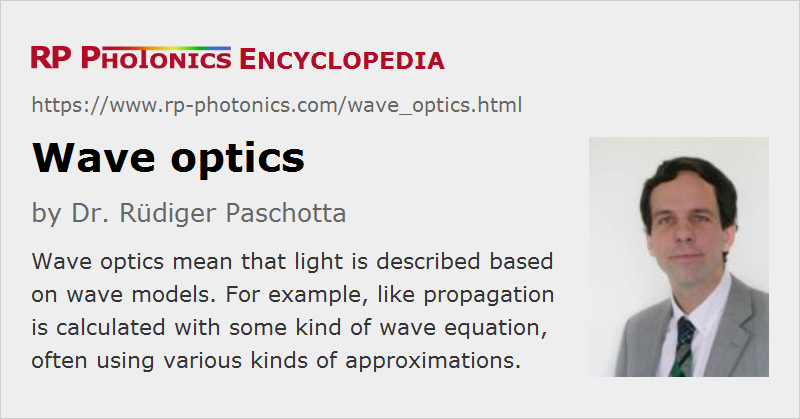

Wave Optics
Definition: the description of optical phenomena based on wave models
Alternative term: physical optics
More general term: optics
German: Wellenoptik
How to cite the article; suggest additional literature
Author: Dr. Rüdiger Paschotta
Early attempts to scientifically describe light and optical phenomena were based on corpuscular theories (developed by René Descartes, Isaac Newton and others), assuming light to consist of small particles which at least in free space travel along straight lines with a velocity. That fits to geometrical optics, where light is represented by geometrical rays. From the 17th century on, scientists like Robert Hooke and Christiaan Huygens followed more closely the evidence for the wave nature of light, and this finally led to the wave theory of light (wave optics), which was mathematically worked out by Huygens (with publication in 1690, see Ref. [1]). Based on that physical model, one could well describe the following important optical phenomena:
- effects of diffraction of light e.g. at narrow optical slits (later studied in more detail, e.g. by Thomas Young)
- interference phenomena
- polarization of light (with pioneering contributions from Augustin-Jean Fresnel)
Only much later, in the 19th century, optical waves were identified with electromagnetic waves by James Clerk Maxwell. However, a lot of productive research in wave optics was already possible before that, i.e., without understanding the detailed physical nature of light waves.
Modern applications of wave optics can be mathematically based on Maxwell's equations as the most fundamental basis; one can directly derive a wave equation from it, which is a second-order differential equation in time and space. For monochromatic light, one obtains the Helmholtz equation. In many cases one uses simplified equations which are approximate but fairly accurate in certain limited domains. For example, one can often neglect the second-order derivative with respect to the z coordinate for fields propagating largely in z direction. One also often uses the paraxial approximation. Scalar wave models, ignoring the transverse nature of electromagnetic waves, are also widely used in optics, e.g. for calculating fiber modes. For some applications, one requires more sophisticated models for a full description of electromagnetic wave propagation.

Wave optics is usually understood to be a completely classical approach, not taking into account any quantum effects. Quantum optics works with extended theories, where the electromagnetic field is treated on a new basis. Wave properties of light continue to play a central role, although some kind of particle character (→ photons) also became apparent.
A very important concept in wave optics is Fourier optics, which essentially means the application of transverse spatial Fourier transforms. This allows both for an intuitive qualitative explanation of various phenomena and design techniques and for quantitative calculations. Such calculations can partly be done with analytical means only.
Frequently, numerical software is used for simulating light propagation based on some kind of wave equation. While this approach can in principle be fairly general, computation time and memory requirements can be excessive when not using various restricting assumptions – for example, that light propagates essentially only in one direction. As far as geometrical optics are sufficient for realistic descriptions, that approach is often preferred over wave optics because it is computationally much less demanding.
A related term is physical optics, which may be interpreted as the same as wave optics, or in a more restricted sense when certain approximations are applied. The term emphasizes that such wave-based models are physically more realistic than geometrical optics, even if they are not based on full Maxwell's equations.
Questions and Comments from Users
Here you can submit questions and comments. As far as they get accepted by the author, they will appear above this paragraph together with the author’s answer. The author will decide on acceptance based on certain criteria. Essentially, the issue must be of sufficiently broad interest.
Please do not enter personal data here; we would otherwise delete it soon. (See also our privacy declaration.) If you wish to receive personal feedback or consultancy from the author, please contact him e.g. via e-mail.
By submitting the information, you give your consent to the potential publication of your inputs on our website according to our rules. (If you later retract your consent, we will delete those inputs.) As your inputs are first reviewed by the author, they may be published with some delay.
Bibliography
| [1] | C. Huygens, “Traité de la Lumière”, Leiden: Pieter van der Aa (1690), available at archive.org |
See also: optics, geometrical optics, Fourier optics, diffraction, interference, polarization of light
and other articles in the category general optics
|  |
If you like this page, please share the link with your friends and colleagues, e.g. via social media:
These sharing buttons are implemented in a privacy-friendly way!